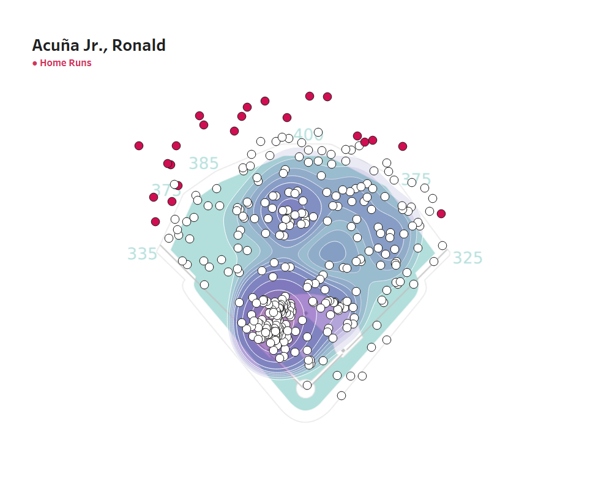
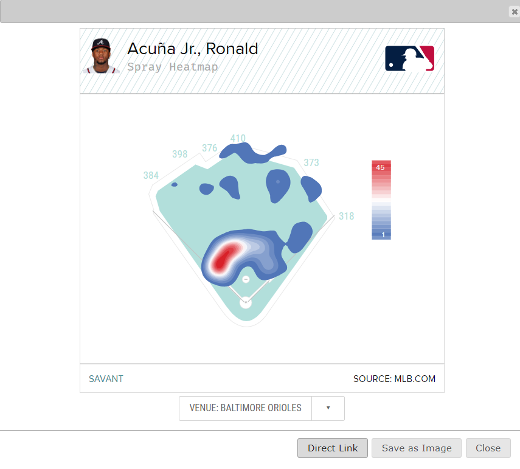
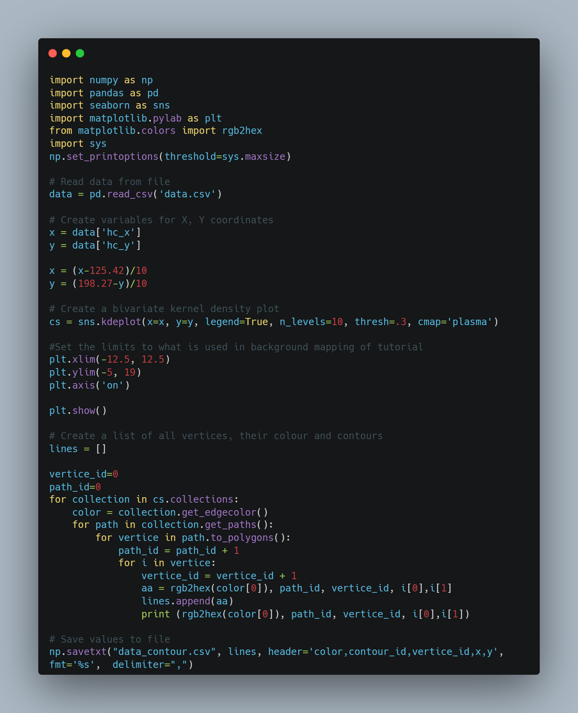
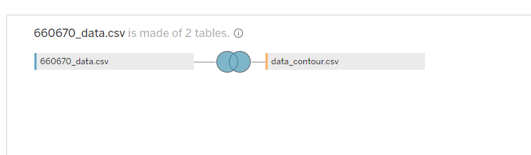
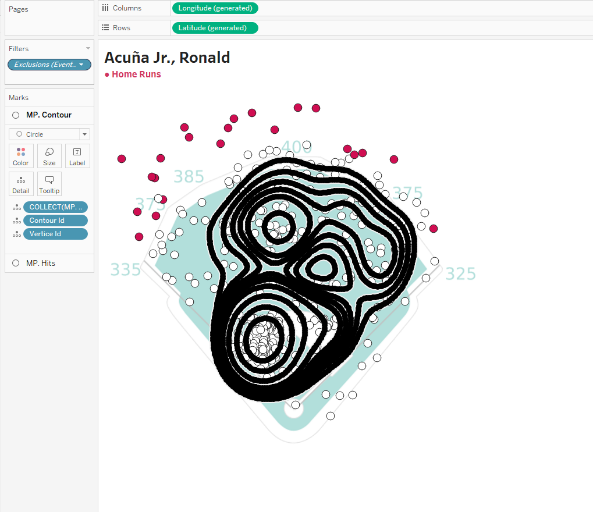
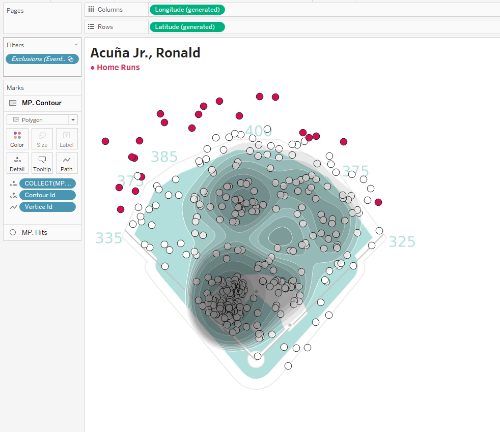
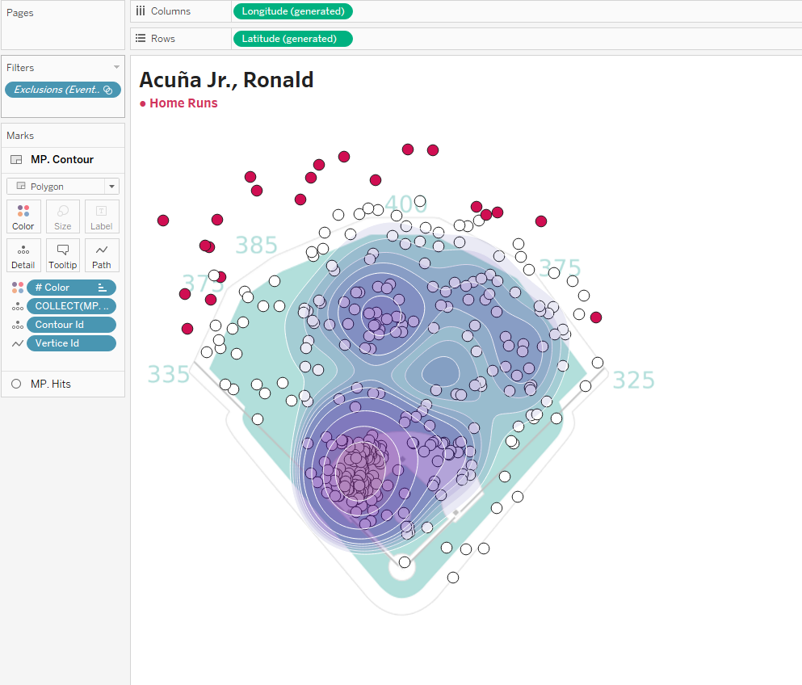

Hi all,
It wasn't long ago that I wrote my first tutorial on baseball. Baseball is still fairly new to me and the analytics behind it, but I've enjoyed the experimentation this far with charting some of it.
Today we will revisit a previous blog and add one extra step in, and that is a heatmap to our spray chart.

For this tutorial we will use the same data as seen in our previous blog, and I recommend you follow that blogbefore giving this one a go. The data can be found in the Github repo at the top of the page.
Heat maps aren't anything new, and baseball savant already showcase examples of spray heatmaps on their website. Our heatmap won't come out the exact same for a variety of reasons that we will cover off in the code.

To create our dataset we will need some code to create the contours. (Code credits: I've amended the below based on a snippet of code from Alexander Varlamov)

What the code does:
It reads data from a CSV file called "data.csv" (our data file from the previous blog, row level data of each hit) using pandas and assigns it to the variable data.
It creates variables x and y to store the X and Y coordinates respectively, extracted from the data DataFrame.
It creates a bivariate kernel density plot using seaborn's kdeplot function, passing x and y as inputs. It also specifies some additional parameters like legend, number of contour levels, threshold, and colormap.
It sets the limits for the x and y axis of the plot and turns on the axis.
It displays the plot using plt.show() This isn't really needed, but always nice to see what your plot looks like before we go to export it.
It initializes an empty list called lines.
It iterates over the collections of the plot created in step 6, extract the edge color of each collection, and loop over the paths within each collection.
For each vertex in each path, it assigns a contour ID, a vertex ID, and stores the colour, contour ID, vertex ID, X-coordinate, and Y-coordinate in a tuple. This tuple is then appended to the lines list, and the information is printed to the console.
Finally, it saves the content of the lines list to a CSV file called "data_contour.csv" with a header row containing column names: color, contour_id, vertice_id, x, y. The values are saved in comma-separated format. (We will look to join this aggregate densified data into our original data.
You will end up with two data files.
data.csv (our original data)
data_contour.csv (our heatmap data)
Open the data and create a connection 1=2 with the new contour data.

Create a new calculation
MP. Contour
Makepoint([Y], [X])
If you've already followed me previous blog you can bring in this new layer onto your original chart.
Here is where things get tricky. You must have used in your code the same x and y mappings as in your background image, and transformed the data in the same way. Otherwise your x and y points will not align well.
Drag contour id and vertice id onto detail.

Let me know how you get on with this one - I can be found on the usual channels.
Make it a line or polygon (depending on preference) and put vertice id onto path.

Add colour onto the color mark.

In your code, you will have specified a type of cmap, which is a good guide of color to use within your visual. You'll see I use a polygon, but reduce the opacity just to see some of the pitch.
If you use polygon make sure to sort your colour field descending on the contour so that your 'Peaks' are at the top.
& That's it. A really simple additional step to our previous mappings.
Things to be cautious of:
The x and y transformations in the code.
Play around with the n_levels and thresh details as well as cmap to visualise different variations of the heatmap in the code.
the xlim and ylim are based on my background imagery, build the original shot map first.
Going further,
Try applying the code to a different sport
Try create a small multiples of the best players this season.